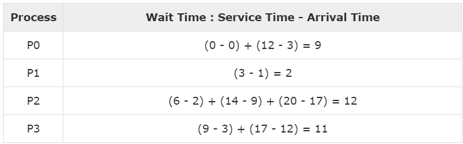

Round Robin Scheduling
- Round Robin is the preemptive process scheduling algorithm.
- Each process is provided a fix time to execute, it is called a quantum.
- Once a process is executed for a given time period, it is preempted and other process executes for a given time period.
- Context switching is used to save states of preempted processes.

Average Wait Time : (9+2+12+11) / 4 = 8.5